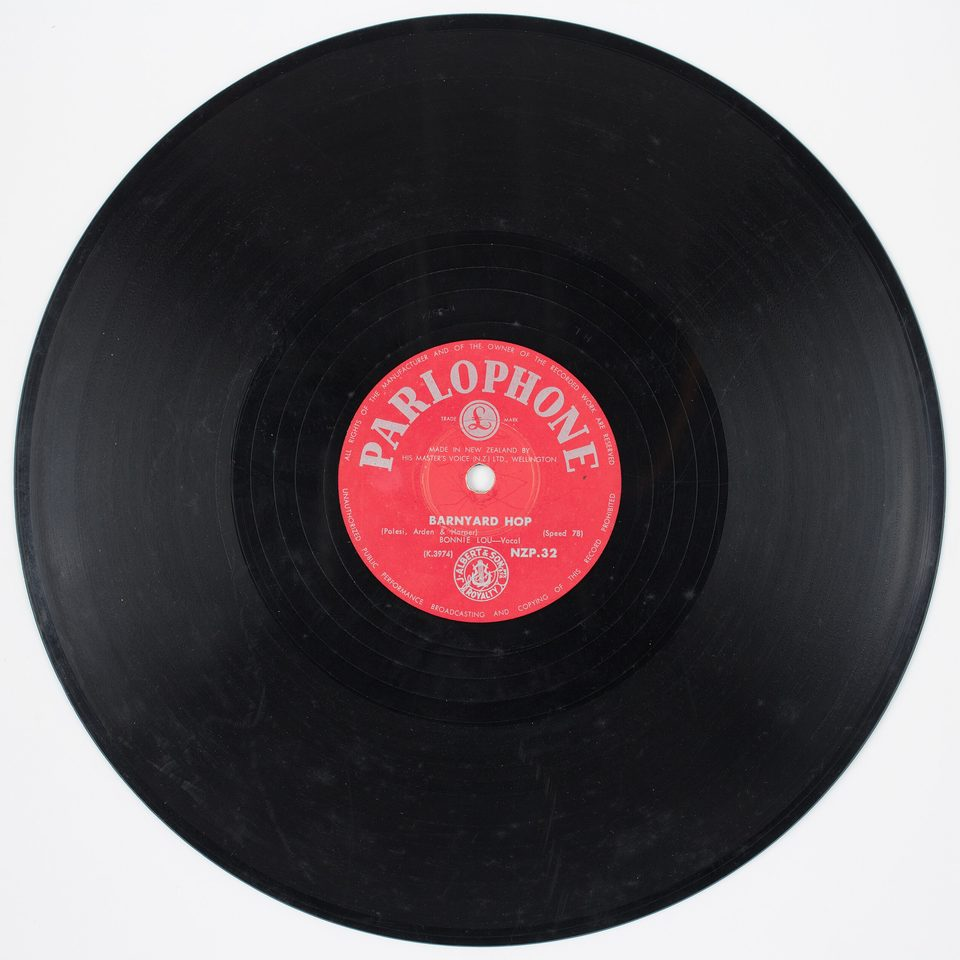
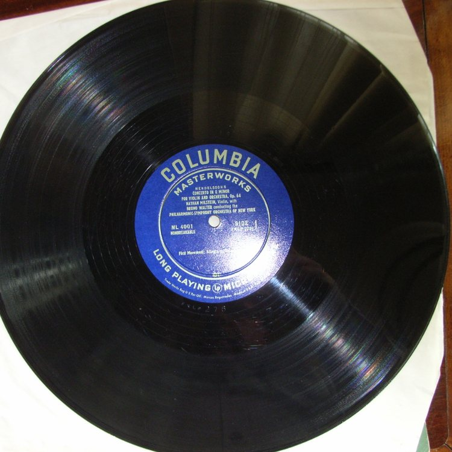
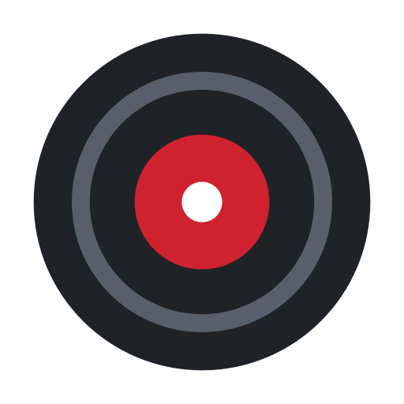
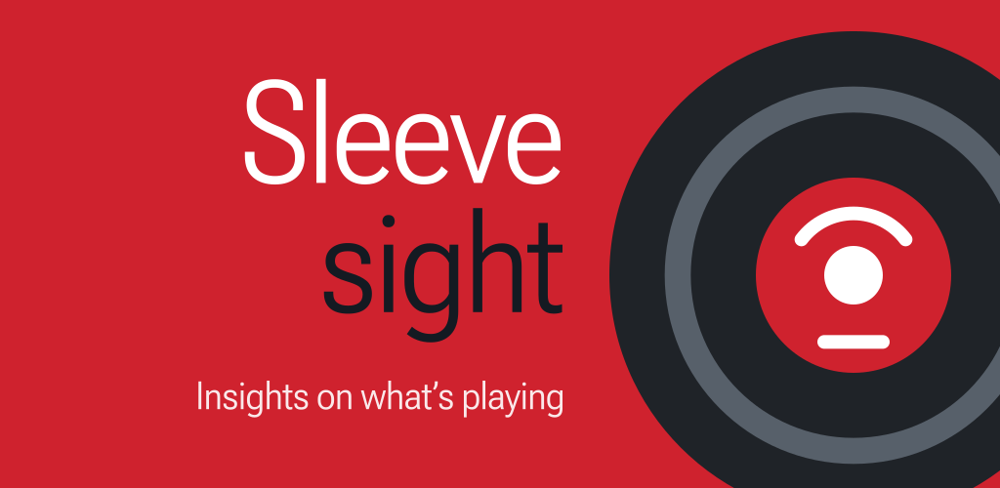
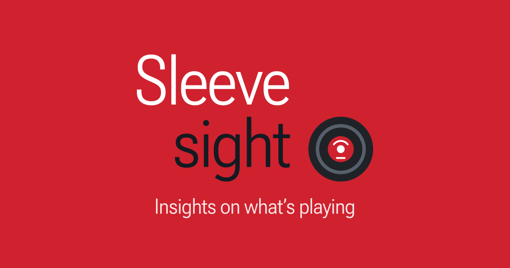

This page is Sleevesight's brand: the fonts it is set in, the record that stands for it and the story behind it, its colours, its logo and the intros that bring the logo in, its icons, the feature graphic of its Google Play listing and the product page's link preview, and the merchandise planned for later.
It is the reference for anything made with the name, on the site, in the app, in the store or in print. The logo, the record and the colours on this page are the ones the site uses, and the app's icon and the site's favicon are drawn from them, so what is here is what they show.
Fonts
Sleevesight is set in Roboto: the logo, this site and the app all take their type from the one family.
Roboto
Roboto is Google's own typeface. Christian Robertson drew it at Google, and it first shipped in 2011, as the system font of Android 4.0, Ice Cream Sandwich, in place of Droid Sans, which had been made for the coarse screens of the first Android phones. The first release had mixed reviews; one critic called it a "four-headed Frankenfont", its parents a Helvetica-like grotesque and a humanist sans like Frutiger or Myriad, with touches of Univers and DIN. In 2014, for Android 5.0, Lollipop, and Google's new Material Design, it was redrawn: slightly wider and rounder, with round dots on the i and j in place of square ones, and a straight leg on the R. It has been the type of Material Design, and of much of Google's own software, ever since.
Google describes it as having a "dual nature": a mechanical skeleton and largely geometric forms, but friendly, open curves, and letters left at their natural widths rather than forced into a rigid rhythm, which reads more like a humanist or serif type than most grotesques do. It has grown into a superfamily: Roboto Condensed, Roboto Slab (2013), Roboto Mono (2015), and in 2022 Roboto Serif and Roboto Flex.
The three faces
Sleevesight uses three members of the family. What each is, and what it was made for:
Flex
Aa Bb Gg Rr 0123
Roboto Flex
A variable Roboto, made for Google by Font Bureau and released in 2022. One file moves along thirteen axes: weight, width, slant, grade and optical size, and eight parametric ones (stroke thicknesses, counter width, and the heights of capitals, lowercase, ascenders, descenders and figures).
Made so that one family can run from small interface text to large display type, the optical size reshaping each letter for the size it is set at.
Made for source code: 1, l and I, and 0 and O, are easy to tell apart, braces have sharper points than parentheses, and periods and commas are enlarged.
All three come from Google Fonts, taken as variable fonts from its own repository, github.com/google/fonts. Sleevesight pages do not link to Google Fonts: a script in this repository, assets/fonts/make_page_font.py, fixes each font's unused axes and cuts it down to the characters the pages use, and the copies it makes are served from this site with the pages. Nothing is fetched from Google, or from anywhere else, when a page loads, so a visit sends nothing to Google for its fonts.
The app carries its own Roboto, regular and medium, inside it, so it downloads nothing either. Its Font setting can switch to the phone's system font.
How we use them
Face
For
Set at
Roboto Flex
Headings, labels, the menu; the words of the logo
400 to 700, width 88% to 100%; the logo's words at 400, width 88%, optical size 52.64, drawn as outlines, so they need no font
Roboto Slab
Running text
350, bold at 700
Roboto Mono
Code; the source chips on the product page
500
Roboto
The app
Regular and medium
Examples
Sleevesight
The linear logo: Roboto Flex 400, width 88%, optical size 52.64, tracking -1.5%; the record trailing.
Insights on what's playing
A heading, the product page's title: Roboto Flex 700, width 90%, tracking -2%.
Sleevesight knows what your music player is playing and shows short, sourced insights about the artist, the song and the album, each with a link to where it came from.
A paragraph: Roboto Slab 350 at 18 px, bold at 700.
The mark's record is a vinyl LP seen from above, drawn in a few shapes: a black disc, a red paper label at its centre, two lines of print on the label, and the hole for the turntable's spindle. It stands for the music that is playing; "sight", beside it, for what the app tells you about it.
The record of the mark, its parts numbered.

The real thing: "Barnyard Hop", sung by Bonnie Lou, a Parlophone 78 pressed in New Zealand. Photo, cropped: Auckland War Memorial Museum, CC BY 2.0.
The disc. Black vinyl. The mark's rim is the record's edge.
The grooves. One spiral, played from the edge inwards; the mark keeps one ring of it.
The label. Paper, printed and pressed into the centre, often in the maker's colour: Parlophone's here is red, as the labels of Columbia's twelve-inch popular albums were from mid-1953. The mark's red is the label's.
The arc. The print arched over the hole: on a real label, the maker's name.
The line. The print in a line below the hole: the title, the artist, the catalogue number.
The hole. Where the spindle goes; the record turns about it, as the mark's record does when the logo is hovered.
A short story of the record
Thomas Edison's phonograph of 1877 was the first machine that could both record sound and play it back, on a cylinder. In the 1880s Emile Berliner pressed it flat, as a disc that could be copied by the thousand, and for half a century records were brittle shellac turning at 78 rpm, under five minutes to a side.
On 21 June 1948, at the Waldorf-Astoria in New York, Columbia unveiled the long-playing record: vinyl in place of shellac, finer grooves, "microgrooves", and 33 1/3 turns a minute, for over twenty minutes a side. A team at CBS Laboratories under Peter Goldmark had worked on it since 1939. Its first twelve-inch album, ML 4001, was Mendelssohn's Violin Concerto, played by Nathan Milstein with the New York Philharmonic under Bruno Walter. RCA Victor answered in 1949 with the seven-inch 45, and the two settled into the album and the single; stereo followed in 1957.
The compact disc, from 1982, outsold the record by 1988, and by the early 1990s the record had left the mainstream. Then it came back. From the late 2000s it grew year on year, and in 2022, for the first time since 1987, vinyl albums outsold CDs in the United States, some 41 million against 33 million.

Columbia ML 4001 (1948), the first twelve-inch LP. Photo, cropped: Sigmundg, CC BY-SA 4.0.
Out of the sleeve
A record lives in a sleeve, and is pulled out of it to be played. The sleeve was for long plain paper; in 1938 Columbia hired Alex Steinweiss as its first art director, who is credited with inventing cover art, and from then on the sleeve carried pictures on its front, and on its back the liner notes: who played, where and when it was recorded, the story behind the music, read while the record played.
Sleevesight is named for that: the record pulled from its sleeve, and the sight of what the sleeve told you. Music on a phone comes without one; the app gives back what its back would have said. Two of the intros show the sleeve:
A record, half way out of its sleeve. The original proposal for Sleevesight's logo.

A sleeve sliding to the side, revealing the record, which then turns into the iris of a stylised eye. The original proposal for Sleevesight's animated intro.A simplified sleeve bearing the app's name as stacked text, sliding to the side, revealing the record. One of the current animated intros.
The photos: "Barnyard Hop", Parlophone, Auckland War Memorial Museum, CC BY 2.0; Columbia ML 4001, Sigmundg, CC BY-SA 4.0. Both from Wikimedia Commons, cropped to the record.
Colours
The logo's colours are few: white and black, the greys of the record, and one red, for the label and for "sight". It comes in two colourways, light, on white, and dark, on black, and each colour below belongs to one or both.
Light, on white.
White#ffffff
The ground; the print on the label, and the hole. The print is 5.4:1 on the label red.
Ink#141a22
"Sleeve". 17.5:1 on white.
Rim#1f2328
The disc. 15.8:1 on white.
Groove#57606a
The ring of groove on the disc. 6.4:1 on white, 2.5:1 on the rim.
Red#cf222e
The label, and "sight". 5.4:1 on white.
Dark, on black.
Black#000000
The ground, and the disc inside the rim.
Ink on dark#e5e8ee
"Sleeve". 17.1:1 on black, as the ink is 17.5:1 on white: a light ink, as far from white as the ink is from black.
White#ffffff
The print on the label, and the hole, as on light.
Rim on dark#8b949e
The disc's rim, a grey ring, so that the record shows on black. 6.8:1 on black.
Red#cf222e
The label, and "sight", as on light. 3.9:1 on black.
The ratios are each colour's contrast against what it sits on, by the measure of the Web Content Accessibility Guidelines, which ask 4.5:1 of text and 3:1 of large text and graphics, and exempt logos. The dark colourway's rim is grey rather than black, so that the record shows on black.
One red serves the label and "sight", on white and on black. On white the label's red is 5.4:1, and on black 3.9:1, enough for type the size of the logo's.
Logo
The logo is the name and the record. It has had two designs: the original, in which the record is the iris of an eye, and the current one, in which the record stands beside the name on its own.
The current logo
Two layouts of one design: the name in Roboto Flex regular at 88% width, "sight" in red, and the record on the right.
Stacked, for the website: "Sleeve" over "sight", aligned right, with the record beside "sight" and as tall as it. The product page's header.
Sleevesight
Linear, for the app: "Sleevesight" on one line, with the record after it, from the top of the "h" (the ascender) to the foot of the "g" (the descender).
The original logo, archived
An eye whose iris is the record, beside the name. Two layouts, linear, with the eye before the name, and stacked, with the eye after it; each in four styles: "Sleeve" regular or bold, "sight" in the ink or in red.
Sleevesight
Linear, regular, one colour.
Sleevesight
Linear, "Sleeve" bold, one colour.
Sleevesight
Linear, regular, "sight" red.
Sleevesight
Linear, "Sleeve" bold, "sight" red.
Sleevesight
Stacked, regular, one colour.
Sleevesight
Stacked, "Sleeve" bold, one colour.
Sleevesight
Stacked, regular, "sight" red.
Sleevesight
Stacked, "Sleeve" bold, "sight" red.
Intros
The intros are a playful way to liven up the pages: the logo arrives with a small move of its own rather than simply being there. The product page opens with one of these, picked at random on each visit; each ends on the stacked logo, which then shrinks into the page's header. Here they play on their own, over and over, without that last move.
The mark fades in and turns twice about the record.
The text tile turns twice about the dot of the i; the tile fades, leaving the words, and the record turns in beside "sight".
The mark fades in, and the record circles the words once about the dot of the i.
The record fades in alone, and the words are typed in beside it, a letter at a time.
The mark fades in, and each e of "Sleeve" turns once, one after the other.
The record fades in with the words to its right; "Sleeve" slides into its place, then "sight", passing behind the record.
"Sleeve" fades in, and the record rolls in under it, uncovering "sight".
The tile slides off the record behind it, as a sleeve; the record shrinks into its place, and the tile fades, leaving the mark.
From intro to header
The intro plays when the page first loads. One of the intros, chosen at random, plays large in the middle of the window, then shrinks into the header, where the logo stays, and the rest of the page fades in around it.
It plays only on that first load. A reload, or a return to the page with Back or Forward, shows the page at once: the page reads how it was reached, so nothing is stored in the browser and the address stays as it was. A link to a section of the page skips the intro too.
A click or a tap on the logo in the header plays an intro again, and hovering over the logo spins the record once. Where the device asks for reduced motion, nothing moves.
The example below shows the page simplified to a few lines. Unlike the page, it plays the intros in turn, one after another, rather than at random. Hover over its logo to spin the record; click the logo, or the button under the page, to move on to the next intro.
A simplified page: an intro plays in the middle and shrinks into the header, and the page fades in; then the next intro.
Icons
Where there is no room for the name, the record alone stands for the logo: in the app's icon, and in the site's favicon. Both are drawn from the record on this page.
App icon
The record on white, five sixths as wide as the icon. Android cuts an app's icon to the launcher's own shape, so the record sits well inside any of them, with a margin of white around it; Google Play rounds the corners itself. Launchers draw an app's icon the same way in light and dark, and the dark record on white stands out on a light wallpaper and on a dark one.

Full square, as Google Play shows it
Circle
Squircle
Rounded square
Favicon
The record alone, filling its square, in the browser's tab. In a dark tab bar it takes the dark colourway, its grey rim apart from the bar. At tab sizes the label is plain: drawn at 32 pixels or less, its marks would blur into a smudge, so they show only where the favicon is drawn larger, as for a bookmark or a shortcut.
16 px32 px48 px
On a light tab bar.
16 px32 px48 px
On a dark tab bar.
Smallest sizes
The stacked logo is 72 pixels tall at the top of the product page, and 36 when the header shrinks as the page scrolls. Its words read down to about 24 pixels; smaller than that, the record alone takes over, as the icons do.
72 px48 px36 px24 px
Light, on white.
72 px48 px36 px24 px
Dark, on black.
Feature graphic
The feature graphic is the banner of the app's Google Play listing, 1024 × 500 pixels. Play shows it at the head of the listing, as the cover of a preview video, and in its collections and ads, where it may crop the edges.
It is the label's red, with "Sleeve" in white over "sight" in the ink, the tagline "Insights on what's playing" under them, and the record beside "sight", large, running off the right and bottom edges, so that only the record is lost where Play crops.

The feature graphic, as on Google Play.
Link preview
The product page's link preview, its og:image, is what a chat or a social network shows with a link to the page: 1200 × 630 pixels, the shape most of them crop to. It is the stacked logo on the label's red, as the feature graphic is, "Sleeve" in white over "sight" in the ink, with the tagline under it, kept inside the middle square, so a service that crops the preview to a square thumbnail still shows the whole logo. The red stands apart from a chat's light and dark backgrounds alike, where white or black would merge with one of them (assets/logo/src/make_og_image.py).

The link preview, as the product page gives it.
Merchandise
Merchandise is planned for once the app gains traction. Until then, a few designs, as mock-ups rather than print-ready art: a white shirt or sticker in the light colourway, a black one in the dark.
T-shirts
A T-shirt: the stacked logo, the words and the record, on the chest.
sleevesight.app
A T-shirt: the eye, with the site's address under it, as on the sticker, on the chest.
Stickers
Die-cut, with a white edge: two designs, each on a rounded square, a squircle and a circle.
_(48708914632).jpg){kind=link}